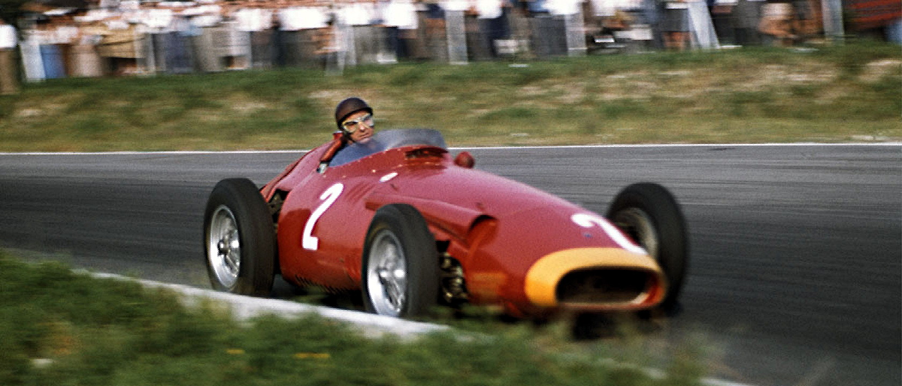

Tazio Nuvolari
Tazio Nuvolari| Numero | Nome | Gare vinte | Periodo in cui ha gareggiato |
| 1 | Juan Manuel Fangio | 24 in F1 e altre in varie categorie | 1950-1960 |
| 2 | Tazio Nuvolari |
69 in moto e 92 in auto | 1920-1940 |
| 3 | Micheal Schumacher | 92 vittorie in F1 e 7 titoli mondiali | 1991-2012 |
| 4 | Sir Lewis Hamilton | 105 vittorie in F1 e 7 titoli mondiali | Dal 2007 |